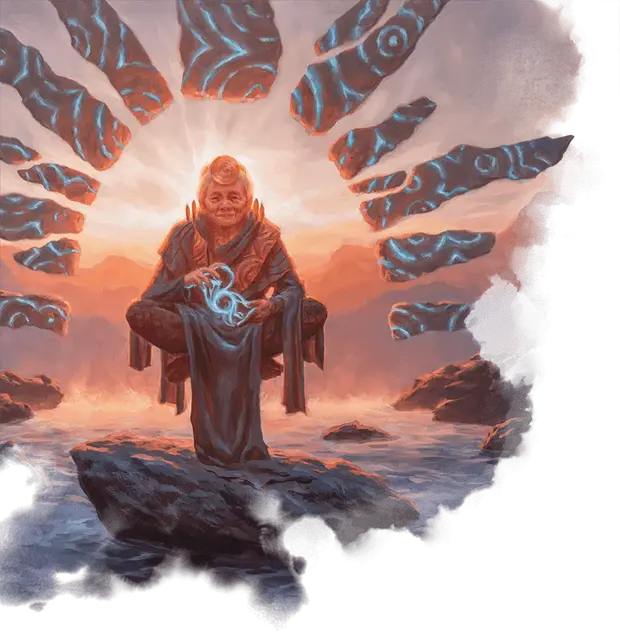

Оракул Стриксхейвена
Oracle of Strixhaven
Средний Гуманоид (Человек, Волшебник), нейтрально-добрый

Класс Доспеха 12 (15 с доспехом мага)
Хиты 150 (20к8 + 60)
Скорость 30 футов, летая 15 футов (парит)
| мод | спас | ||
|---|---|---|---|
| СИЛ | 12 | +1 | +1 |
| ЛОВ | 15 | +2 | +2 |
| ТЕЛ | 16 | +3 | +8 |
| мод | спас | ||
|---|---|---|---|
| ИНТ | 21 | +5 | +10 |
| МДР | 20 | +5 | +10 |
| ХАР | 18 | +4 | +9 |
Навыки Восприятие +10, Магия +15, Природа +10, Проницательность +15, Расследование +15
Иммунитет к состояниям испуг, очарование
Чувства пассивное Восприятие 20
Языки Все
Опасность 15 (13000 опыта)
Бонус мастерства +5
Особенности
Легендарное сопротивление (3/день). Если оракул провалит спасбросок, она может вместо этого сделать спасбросок успешным.
Действия
Мультиатака. Оракул совершает две атаки Магической вспышкой. Она также может использовать Парадокс, если он доступен.
Магическая вспышка. . Рукопашная или Дальнобойная атака заклинанием: +10 к попаданию, досягаемость 5 футов или дистанция 60 футов, одна цель. Попадание: 24 (3к12 + 5) урона силовым полем.
Парадокс (перезарядка 4–6). Кратковременные искажения реальности появляются в трех разных точках, которые Оракул может видеть в пределах 120 футов. Каждое существо в сфере радиусом 20 футов с центром в каждой точке должно совершить спасбросок Силы Сл 18. При провале существо получает 33 (6к10) урона силовым полем и притягивается на 15 футов по прямой линии к центру сферы. При успехе существо получает половину этого урона и не притягивается. На существо, попавшее в зону множественных искажений, влияет только одна, которую выбирает Оракул.
Использование заклинаний. Оракул накладывает одно из следующих заклинаний, используя Интеллект в качестве базовой характеристики (Сл спасброска от заклинаний 18):
• Неограниченно: обнаружение магии [detect magic];
• 2/день каждое: рассеивание магии [dispel magic], доспехи мага [mage armor], снятие проклятья [remove curse], послание [sending];
• 1/день каждое: слово силы: оглушение [power word stun], наблюдение [scrying] (накладывается Действием), силовая стена [wall of force].
Телепортация. Оракул телепортируется вместе со всем снаряжением, которое она носит или несёт, в свободное пространство, которое она может видеть в пределах 60 футов.
Легендарные действия
Оракул может совершать 3 легендарных действия, выбирая из указанных ниже вариантов. Лишь одно легендарное действие может быть совершено за раз, и только в конце хода другого существа. Оракул восстанавливает истраченные действия в начале своего хода.
Изменение вектора. Оракул телепортирует одно существо, которое она может видеть в пределах 60 футов, вместе с любым снаряжением, которое оно носит или несет, в свободное пространство в пределах 30 футов от себя. Несогласная цель должна преуспеть в спасброске Харизмы Сл 18, чтобы избежать этого эффекта.
Накладывание заклинания (стоит 2 действия). Оракул накладывает заклинание.
Вихревая прогулка (стоит 2 действия). Оракул использует Телепортацию, и сразу после того, как она исчезает, каждое существо в пределах 30 футов от оставленного ею места должно совершить спасбросок Телосложения Сл 18, иначе получит 16 (3к10) урона силовым полем.
Описание
Где-то в землях за границами Стриксхейвена живет Оракул: мудрый и опытный маг, которому Драконы-Основатели поручили следить за тем, чтобы магия Стриксхейвена использовалась для помощи другим, а не использовалась для злых целей. Тот, кто носит мантию Оракула, должен не только понимать фундаментальные истины магии, но и обладать безупречной мудростью и непоколебимой добродетелью.
Нынешний Оракул - пожилая женщина человек по имени Джадзи. Выпускница факультета Квандрикс, Джадзи с тех пор расширила свои исследования, чтобы охватить все дисциплины волшебства, сочетая математические абстракции, которыми она владела в Стриксхейвене, с доброжелательным предсказанием и возвращением к основам самой магии.